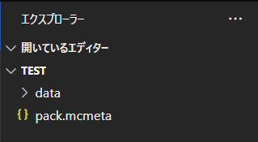
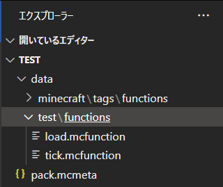
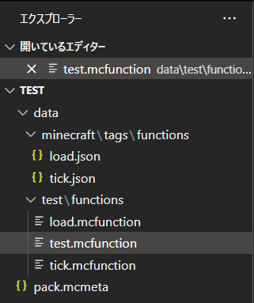

データパックの知識
functionの使い方¶
この項目では実際にfunctionの機能を使ったデータパックを作成します。
データパック自体の作成方法は、データパックのつくり方を参考にしてください。
データパックの作成後、VSCodeの「ファイル」>「フォルダを開く」から編集するデータパックのフォルダを開いてください。
フォルダが開かれると、「エクスプローラー」の項目が画像のようにフォルダとファイル群が表示されるようになります。

フォルダの中を展開すると、tick.mcfunctionと、load.functionの二つのファイルがあります。この2つは後ほど解説します。

今回は、data/test/functionsの中にファイルを作っていきます。まずは、test.mcfunctionというファイルを作成してください。
この時、mcfunctionのスペルが異なると、データパックのfunctionとして認識してくれません。
作成するとフォルダの中身は次のようになります。

次に、test.mcfunctionに早速書いてみましょう。ファイルを開き、次のコマンドを入れてください。
| test.mcfunction | |
|---|---|
/reloadでリロードしましょう。その後、/function test:testと入れるとチャット欄にと表示されます。 では、さらに追加してみましょう。
/reloadを実行し、再度/function test:testと入れると、今度はタイトルにも"テスト!"の文字が表示されるようになります。つまり、データパックは上から順番にMinecraftのコマンドを実行するものです。また、注意点としてコマンドを実行する場合には、
/(スラッシュ)が必要になりますが、データパックではこれをつけるとエラーになるという点です。
まとめ
- データパックは
mcfunctionという拡張子のついたファイルに記述する。 - 同じファイルにいくつものコマンドを入力できるが、行で区切る(1行目はこれ、2行目はこれ...)
- データパックの中身はコマンドなのでワールド側で入力するコマンドと変わらないが、
/を入れてはならない - 権限レベルを変更しない限り、
kick、banなどといったコマンドを実行することができない
注意
- データパック内(ファイル、フォルダ名、名前空間)に使用できる文字は、数字・英小文字・下線・ハイフン・スラッシュ・ピリオドである。
権限レベル¶
また、データパックを実行する権限レベルが2です。
権限レベルが3~4必要なkick、op、banなどといったコマンドはデータパック内では実行できません。
| 権限レベル | できること |
|---|---|
| １ | スポーン保護の無視 |
| 2 | コマンドブロック、functionの実行 |
| 3 | kick、banなどの実行(マルチ) |
| 4 | サーバーコンソール、opの取得(マルチ) |